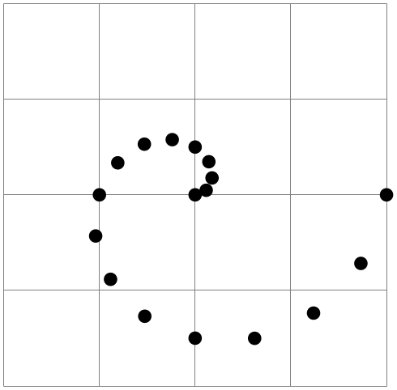

The TikZ and PGF Packages
Manual for version 3.1.9a
TikZ
13 Specifying Coordinates
13.1 Overview¶
A coordinate is a position on the canvas on which your picture is drawn. TikZ uses a special syntax for specifying coordinates. Coordinates are always put in round brackets. The general syntax is ([⟨options⟩]⟨coordinate specification⟩).
The ⟨coordinate specification⟩ specifies coordinates using one of many different possible coordinate systems. Examples are the Cartesian coordinate system or polar coordinates or spherical coordinates. No matter which coordinate system is used, in the end, a specific point on the canvas is represented by the coordinate.
There are two ways of specifying which coordinate system should be used:
- Explicitly
-
You can specify the coordinate system explicitly. To do so, you give the name of the coordinate system at the beginning, followed by cs:, which stands for “coordinate system”, followed by a specification of the coordinate using the key–value syntax. Thus, the general syntax for ⟨coordinate specification⟩ in the explicit case is (⟨coordinate system⟩ cs:⟨list of key–value pairs specific to the coordinate system⟩).
- Implicitly
-
The explicit specification is often too verbose when numerous coordinates should be given. Because of this, for the coordinate systems that you are likely to use often a special syntax is provided. TikZ will notice when you use a coordinate specified in a special syntax and will choose the correct coordinate system automatically.
Here is an example in which explicit the coordinate systems are specified explicitly:

\begin{tikzpicture}
\draw[help lines] (0,0) grid
(3,2);
\draw (canvas cs:x=0cm,y=2mm)
--
(canvas polar cs:radius=2cm,angle=30);
\end{tikzpicture}
In the next example, the coordinate systems are implicit:
\begin{tikzpicture}
\draw[help lines] (0,0) grid
(3,2);
\draw (0cm,2mm) --
(30:2cm);
\end{tikzpicture}
It is possible to give options that apply only to a single coordinate, although this makes sense for transformation options only. To give transformation options for a single coordinate, give these options at the beginning in brackets:
\begin{tikzpicture}
\draw[help lines] (0,0) grid
(3,2);
\draw (0,0) --
(1,1);
\draw[red] (0,0) --
([xshift=3pt] 1,1);
\draw (1,0) --
+(30:2cm);
\draw[red] (1,0) --
+([shift=(135:5pt)]
30:2cm);
\end{tikzpicture}
13.2 Coordinate Systems¶
13.2.1 Canvas, XYZ, and Polar Coordinate Systems¶
Let us start with the basic coordinate systems.
Coordinate system canvas ¶
The simplest way of specifying a coordinate is to use the canvas coordinate system. You provide a dimension \(d_x\) using the x= option and another dimension \(d_y\) using the y= option. The position on the canvas is located at the position that is \(d_x\) to the right and \(d_y\) above the origin.
/tikz/cs/x=⟨dimension⟩ (no default, initially 0pt) ¶
Distance by which the coordinate is to the right of the origin. You can also write things like 1cm+2pt since the mathematical engine is used to evaluate the ⟨dimension⟩.
/tikz/cs/y=⟨dimension⟩ (no default, initially 0pt) ¶
Distance by which the coordinate is above the origin.

\begin{tikzpicture}
\draw[help lines] (0,0) grid
(3,2);
\fill (canvas cs:x=1cm,y=1.5cm) circle
(2pt);
\fill (canvas cs:x=2cm,y=-5mm+2pt) circle
(2pt);
\end{tikzpicture}
To specify a coordinate in the coordinate system implicitly, you use two dimensions that are separated by a comma as in (0cm,3pt) or (2cm,\textheight).
\begin{tikzpicture}
\draw[help lines] (0,0) grid
(3,2);
\fill (1cm,1.5cm) circle
(2pt);
\fill (2cm,-5mm+2pt) circle
(2pt);
\end{tikzpicture}
Coordinate system xyz ¶
The xyz coordinate system allows you to specify a point as a multiple of three vectors called the \(x\)-, \(y\)-, and \(z\)-vectors. By default, the \(x\)-vector points 1cm to the right, the \(y\)-vector points 1cm upwards, but this can be changed arbitrarily as explained in Section 25.2. The default \(z\)-vector points to \(\bigl (-3.85\textrm {mm},-3.85\textrm {mm}\bigr )\).
To specify the factors by which the vectors should be multiplied before being added, you use the following three options:
/tikz/cs/x=⟨factor⟩ (no default, initially 0)
Factor by which the \(x\)-vector is multiplied.
/tikz/cs/y=⟨factor⟩ (no default, initially 0)
Works like x.
/tikz/cs/z=⟨factor⟩ (no default, initially 0) ¶
Works like x.

\begin{tikzpicture}[->]
\draw (0,0) --
(xyz cs:x=1);
\draw (0,0) --
(xyz cs:y=1);
\draw (0,0) --
(xyz cs:z=1);
\end{tikzpicture}
This coordinate system can also be selected implicitly. To do so, you just provide two or three comma-separated factors (not dimensions).

\begin{tikzpicture}[->]
\draw (0,0) --
(1,0);
\draw (0,0) --
(0,1,0);
\draw (0,0) --
(0,0,1);
\end{tikzpicture}
Note: It is possible to use coordinates like (1,2cm), which are neither canvas coordinates nor xyz coordinates. The rule is the following: If a coordinate is of the implicit form (⟨x⟩,⟨y⟩), then ⟨x⟩ and ⟨y⟩ are checked, independently, whether they have a dimension or whether they are dimensionless. If both have a dimension, the canvas coordinate system is used. If both lack a dimension, the xyz coordinate system is used. If ⟨x⟩ has a dimension and ⟨y⟩ has not, then the sum of two coordinate (⟨x⟩,0pt) and (0,⟨y⟩) is used. If ⟨y⟩ has a dimension and ⟨x⟩ has not, then the sum of two coordinate (⟨x⟩,0) and (0pt,⟨y⟩) is used.
Note furthermore: An expression like (2+3cm,0) does not mean the same as (2cm+3cm,0). Instead, if ⟨x⟩ or ⟨y⟩ internally uses a mixture of dimensions and dimensionless values, then all dimensionless values are “upgraded” to dimensions by interpreting them as pt. So, 2+3cm is the same dimension as 2pt+3cm.
Coordinate system canvas polar ¶
The canvas polar coordinate system allows you to specify polar coordinates. You provide an angle using the angle= option and a radius using the radius= option. This yields the point on the canvas that is at the given radius distance from the origin at the given degree. An angle of zero degrees to the right, a degree of 90 upward.
/tikz/cs/angle=⟨degrees⟩(no default) ¶
The angle of the coordinate. The angle must always be given in degrees.
/tikz/cs/radius=⟨dimension⟩(no default) ¶
The distance from the origin.
/tikz/cs/x radius=⟨dimension⟩(no default) ¶
A polar coordinate is, after all, just a point on a circle of the given ⟨radius⟩. When you provide an \(x\)-radius and also a \(y\)-radius, you specify an ellipse instead of a circle. The radius option has the same effect as specifying identical x radius and y radius options.
/tikz/cs/y radius=⟨dimension⟩(no default) ¶
Works like x radius.
The implicit form for canvas polar coordinates is the following: you specify the angle and the distance, separated by a colon as in (30:1cm).
Two different radii are specified by writing (30:1cm and 2cm).
For the implicit form, instead of an angle given as a number you can also use certain words. For example, up is the same as 90, so that you can write \tikz \draw (0,0) -- (2ex,0pt) -- +(up:1ex); and get . Apart from up you can use down, left, right, north, south, west, east, north east, north west, south east, south west, all of which have their natural meaning.
Coordinate system xyz polar ¶
This coordinate system work similarly to the canvas polar system. However, the radius and the angle are interpreted in the \(xy\)-coordinate system, not in the canvas system. More detailed, consider the circle or ellipse whose half axes are given by the current \(x\)-vector and the current \(y\)-vector. Then, consider the point that lies at a given angle on this ellipse, where an angle of zero is the same as the \(x\)-vector and an angle of 90 is the \(y\)-vector. Finally, multiply the resulting vector by the given radius factor. Voilà.
/tikz/cs/angle=⟨degrees⟩(no default)
The angle of the coordinate interpreted in the ellipse whose axes are the \(x\)-vector and the \(y\)-vector.
/tikz/cs/radius=⟨factor⟩(no default)
A factor by which the \(x\)-vector and \(y\)-vector are multiplied prior to forming the ellipse.
/tikz/cs/x radius=⟨dimension⟩(no default)
A specific factor by which only the \(x\)-vector is multiplied.
/tikz/cs/y radius=⟨dimension⟩(no default)
Works like x radius.
\begin{tikzpicture}[x=1.5cm,y=1cm]
\draw[help lines] (0cm,0cm) grid
(3cm,2cm);
\draw (0,0) --
(xyz polar cs:angle=0,radius=1);
\draw (0,0) --
(xyz polar cs:angle=30,radius=1);
\draw (0,0) --
(xyz polar cs:angle=60,radius=1);
\draw (0,0) --
(xyz polar cs:angle=90,radius=1);
\draw (xyz polar cs:angle=0,radius=2)
--
(xyz polar cs:angle=30,radius=2)
--
(xyz polar cs:angle=60,radius=2)
--
(xyz polar cs:angle=90,radius=2);
\end{tikzpicture}
The implicit version of this option is the same as the implicit version of canvas polar, only you do not provide a unit.
Coordinate system xy polar ¶
This is just an alias for xyz polar, which some people might prefer as there is no z-coordinate involved in the xyz polar coordinates.
13.2.2 Barycentric Systems¶
In the barycentric coordinate system a point is expressed as the linear combination of multiple vectors. The idea is that you specify vectors \(v_1\), \(v_2\), …, \(v_n\) and numbers \(\alpha _1\), \(\alpha _2\), …, \(\alpha _n\). Then the barycentric coordinate specified by these vectors and numbers is
\(\seteqnumber{0}{}{0}\)\begin{align*} \frac {\alpha _1 v_1 + \alpha _2 v_2 + \cdots + \alpha _n v_n}{\alpha _1 + \alpha _2 + \cdots + \alpha _n} \end{align*}
The barycentric cs allows you to specify such coordinates easily.
Coordinate system barycentric ¶
For this coordinate system, the ⟨coordinate specification⟩ should be a comma-separated list of expressions of the form ⟨node name⟩=⟨number⟩. Note that (currently) the list should not contain any spaces before or after the ⟨node name⟩ (unlike normal key–value pairs).
The specified coordinate is now computed as follows: Each pair provides one vector and a number. The vector is the center anchor of the ⟨node name⟩. The number is the ⟨number⟩. Note that (currently) you cannot specify a different anchor, so that in order to use, say, the north anchor of a node you first have to create a new coordinate at this north anchor. (Using for instance \coordinate(mynorth) at (mynode.north);.)
\begin{tikzpicture}
\coordinate (content) at
(90:3cm);
\coordinate (structure) at
(210:3cm);
\coordinate (form) at
(-30:3cm);
\node [above] at
(content) {content
oriented};
\node [below left] at
(structure) {structure
oriented};
\node [below right] at
(form) {form
oriented};
\draw [thick,gray] (content.south) --
(structure.north east) --
(form.north west) --
cycle;
\small
\node at
(barycentric cs:content=0.5,structure=0.1 ,form=1) {PostScript};
\node at
(barycentric cs:content=1 ,structure=0 ,form=0.4) {DVI};
\node at
(barycentric cs:content=0.5,structure=0.5 ,form=1) {PDF};
\node at
(barycentric cs:content=0 ,structure=0.25,form=1) {CSS};
\node at
(barycentric cs:content=0.5,structure=1 ,form=0) {XML};
\node at
(barycentric cs:content=0.5,structure=1 ,form=0.4) {HTML};
\node at
(barycentric cs:content=1 ,structure=0.2 ,form=0.8) {\TeX};
\node at
(barycentric cs:content=1 ,structure=0.6 ,form=0.8) {\LaTeX};
\node at
(barycentric cs:content=0.8,structure=0.8 ,form=1) {Word};
\node at
(barycentric cs:content=1 ,structure=0.05,form=0.05) {ASCII};
\end{tikzpicture}
13.2.3 Node Coordinate System¶
In pgf and in TikZ it is quite easy to define a node that you wish to reference at a later point. Once you have defined a node, there are different ways of referencing points of the node. To do so, you use the following coordinate system:
Coordinate system node ¶
This coordinate system is used to reference a specific point inside or on the border of a previously defined node. It can be used in different ways, so let us go over them one by one.
You can use three options to specify which coordinate you mean:
/tikz/cs/name=⟨node name⟩(no default) ¶
Specifies the node that you wish to use to specify a coordinate. The ⟨node name⟩ is the name that was previously used to name the node using the name=⟨node name⟩ option or the special node name syntax.
/tikz/anchor=⟨anchor⟩(no default) ¶
Specifies an anchor of the node. Here is an example:
\usetikzlibrary {arrows.meta}
\begin{tikzpicture}
\node (shape) at
(0,2) [draw] {\texttt{class
Shape}};
\node (rect) at
(-2,0) [draw] {\texttt{class
Rectangle}};
\node (circle) at
(2,0) [draw] {\texttt{class
Circle}};
\node (ellipse) at
(6,0) [draw] {\texttt{class
Ellipse}};
\draw (node cs:name=circle,anchor=north) |-
(0,1);
\draw (node cs:name=ellipse,anchor=north) |-
(0,1);
\draw [arrows =
-{Triangle[open, angle=60:3mm]}]
(node cs:name=rect,anchor=north)
|-
(0,1) -|
(node cs:name=shape,anchor=south);
\end{tikzpicture}
/tikz/cs/angle=⟨degrees⟩(no default)
It is also possible to provide an angle instead of an anchor. This coordinate refers to a point of the node’s border where a ray shot from the center in the given angle hits the border. Here is an example:

It is possible to provide neither the anchor= option nor the angle= option. In this case, TikZ will calculate an appropriate border position for you. Here is an example:
TikZ will be reasonably clever at determining the border points that you “mean”, but, naturally, this may fail in some situations. If TikZ fails to determine an appropriate border point, the center will be used instead.
Automatic computation of anchors works only with the line-to operations --, the vertical/horizontal versions |- and -|, and with the curve-to operation ... For other path commands, such as parabola or plot, the center will be used. If this is not desired, you should give a named anchor or an angle anchor.
Note that if you use an automatic coordinate for both the start and the end of a line-to, as in --(node cs:name=b)--, then two border coordinates are computed with a move-to between them. This is usually exactly what you want.
If you use relative coordinates together with automatic anchor coordinates, the relative coordinates are computed relative to the node’s center, not relative to the border point. Here is an example:

Similarly, in the following examples both control points are \((1,1)\):
The implicit way of specifying the node coordinate system is to simply use the name of the node in parentheses as in (a) or to specify a name together with an anchor or an angle separated by a dot as in (a.north) or (a.10).
Here is a more complete example:
\usetikzlibrary {shapes.geometric}
\begin{tikzpicture}[fill=blue!20]
\draw[help lines] (-1,-2) grid
(6,3);
\path (0,0) node(a) [ellipse,rotate=10,draw,fill] {An
ellipse}
(3,-1) node(b) [circle,draw,fill] {A
circle}
(2,2) node(c) [rectangle,rotate=20,draw,fill] {A
rectangle}
(5,2) node(d) [rectangle,rotate=-30,draw,fill] {Another
rectangle};
\draw[thick] (a.south) --
(b) --
(c) --
(d);
\draw[thick,red,->] (a) |-
+(1,3) -|
(c) |-
(b);
\draw[thick,blue,<->] (b) .. controls
+(right:2cm) and
+(down:1cm) .. (d);
\end{tikzpicture}
13.2.4 Tangent Coordinate Systems¶
Coordinate system tangent ¶
This coordinate system, which is available only when the TikZ library calc is loaded, allows you to compute the point that lies tangent to a shape. In detail, consider a ⟨node⟩ and a ⟨point⟩. Now, draw a straight line from the ⟨point⟩ so that it “touches” the ⟨node⟩ (more formally, so that it is tangent to this ⟨node⟩). The point where the line touches the shape is the point referred to by the tangent coordinate system.
The following options may be given:
/tikz/cs/node=⟨node⟩(no default) ¶
This key specifies the node on whose border the tangent should lie.
/tikz/cs/point=⟨point⟩(no default) ¶
This key specifies the point through which the tangent should go.
/tikz/cs/solution=⟨number⟩(no default) ¶
Specifies which solution should be used if there are more than one.
A special algorithm is needed in order to compute the tangent for a given shape. Currently, tangents can be computed for nodes whose shape is one of the following:
• coordinate • circle
\usetikzlibrary {calc}
\begin{tikzpicture}
\draw[help lines] (0,0) grid
(3,2);
\coordinate (a) at
(3,2);
\node [circle,draw] (c) at
(1,1) [minimum size=40pt] {$c$};
\draw[red] (a) --
(tangent cs:node=c,point={(a)},solution=1) --
(c.center) --
(tangent cs:node=c,point={(a)},solution=2) --
cycle;
\end{tikzpicture}
There is no implicit syntax for this coordinate system.
13.2.5 Defining New Coordinate Systems¶
While the set of coordinate systems that TikZ can parse via their special syntax is fixed, it is possible and quite easy to define new explicitly named coordinate systems. For this, the following commands are used:
\tikzdeclarecoordinatesystem{⟨name⟩}{⟨code⟩} ¶
This command declares a new coordinate system named ⟨name⟩ that can later on be used by writing (⟨name⟩ cs:⟨arguments⟩). When TikZ encounters a coordinate specified in this way, the ⟨arguments⟩ are passed to ⟨code⟩ as argument #1.
It is now the job of ⟨code⟩ to make sense of the ⟨arguments⟩. At the end of ⟨code⟩, the two TeX dimensions \pgf@x and \pgf@y should be have the \(x\)- and \(y\)-canvas coordinate of the coordinate.
It is not necessary, but customary, to parse ⟨arguments⟩ using the key–value syntax. However, you can also parse it in any way you like.
In the following example, a coordinate system cylindrical is defined.
\makeatletter
\define@key{cylindricalkeys}{angle}{\def\myangle{#1}}
\define@key{cylindricalkeys}{radius}{\def\myradius{#1}}
\define@key{cylindricalkeys}{z}{\def\myz{#1}}
\tikzdeclarecoordinatesystem{cylindrical}%
{%
\setkeys{cylindricalkeys}{#1}%
\pgfpointadd{\pgfpointxyz{0}{0}{\myz}}{\pgfpointpolarxy{\myangle}{\myradius}}
}
\begin{tikzpicture}[z=0.2pt]
\draw [->] (0,0,0) --
(0,0,350);
\foreach \num in
{0,10,...,350}
\fill (cylindrical cs:angle=\num,radius=1,z=\num) circle
(1pt);
\end{tikzpicture}
\tikzaliascoordinatesystem{⟨new name⟩}{⟨old name⟩} ¶
Creates an alias of ⟨old name⟩.
13.3 Coordinates at Intersections¶
You will wish to compute the intersection of two paths. For the special and frequent case of two perpendicular lines, a special coordinate system called perpendicular is available. For more general cases, the intersection library can be used.
13.3.1 Intersections of Perpendicular Lines¶
A frequent special case of path intersections is the intersection of a vertical line going through a point \(p\) and a horizontal line going through some other point \(q\). For this situation there is a useful coordinate system.
Coordinate system perpendicular ¶
You can specify the two lines using the following keys:
/tikz/cs/horizontal line through={(⟨coordinate⟩)}(no default) ¶
Specifies that one line is a horizontal line that goes through the given coordinate.
/tikz/cs/vertical line through={(⟨coordinate⟩)}(no default) ¶
Specifies that the other line is vertical and goes through the given coordinate.
However, in almost all cases you should, instead, use the implicit syntax. Here, you write (⟨p⟩ |- ⟨q⟩) or (⟨q⟩ -| ⟨p⟩).
For example, (2,1 |- 3,4) and (3,4 -| 2,1) both yield the same as (2,4) (provided the \(xy\)-coordinate system has not been modified).
The most useful application of the syntax is to draw a line up to some point on a vertical or horizontal line. Here is an example:
\begin{tikzpicture}
\path (30:1cm) node(p1) {$p_1$} (75:1cm) node(p2) {$p_2$};
\draw (-0.2,0) --
(1.2,0) node(xline)[right] {$q_1$};
\draw (2,-0.2) --
(2,1.2) node(yline)[above] {$q_2$};
\draw[->] (p1) --
(p1 |- xline);
\draw[->] (p2) --
(p2 |- xline);
\draw[->] (p1) --
(p1 -| yline);
\draw[->] (p2) --
(p2 -| yline);
\end{tikzpicture}
Note that in (⟨c⟩ |- ⟨d⟩) the coordinates ⟨c⟩ and ⟨d⟩ are not surrounded by parentheses. If they need to be complicated expressions (like a computation using the $-syntax), you must surround them with braces; parentheses will then be added around them.
As an example, let us specify a point that lies horizontally at the middle of the line from \(A\) to \(B\) and vertically at the middle of the line from \(C\) to \(D\):
13.3.2 Intersections of Arbitrary Paths¶
TikZ Library intersections ¶
\usetikzlibrary{intersections} %
LaTeX
and plain
TeX
\usetikzlibrary[intersections] % ConTeXt
This library enables the calculation of intersections of two
arbitrary paths. However, due to the low accuracy of
TeX, the paths should not be “too complicated”. In
particular, you should not try to intersect paths consisting of
lots of very small segments such as plots or decorated paths.
To find the intersections of two paths in TikZ, they must be “named”. A “named path” is, quite simply, a path that has been named using the following key (note that this is a different key from the name key, which only attaches a hyperlink target to a path, but does not store the path in a way the is useful for the intersection computation):
/tikz/name path=⟨name⟩(no default) ¶
/tikz/name path global=⟨name⟩(no default) ¶
The effect of this key is that, after the path has been constructed, just before it is used, it is associated with ⟨name⟩. For name path, this association survives beyond the final semi-colon of the path but not the end of the surrounding scope. For name path global, the association will survive beyond any scope as well. Handle with care.
Any paths created by nodes on the (main) path are ignored, unless this key is explicitly used. If the same ⟨name⟩ is used for the main path and the node path(s), then the paths will be added together and then associated with ⟨name⟩.
To find the intersection of named paths, the following key is used:
/tikz/name intersections={⟨options⟩}(no default) ¶
This key changes the key path to /tikz/intersection and processes ⟨options⟩. These options determine, among other things, which paths to use for the intersection. Having processed the options, any intersections are then found. A coordinate is created at each intersection, which by default, will be named intersection-1, intersection-2, and so on. Optionally, the prefix intersection can be changed, and the total number of intersections stored in a TeX-macro.
\usetikzlibrary {intersections}
\begin{tikzpicture}[every node/.style={opacity=1, black, above left}]
\draw [help lines] grid
(3,2);
\draw [name path=ellipse] (2,0.5) ellipse
(0.75cm and 1cm);
\draw [name path=rectangle, rotate=10] (0.5,0.5) rectangle
+(2,1);
\fill [red, opacity=0.5, name intersections={of=ellipse and
rectangle}]
(intersection-1) circle
(2pt) node
{1}
(intersection-2) circle
(2pt) node
{2};
\end{tikzpicture}
The following keys can be used in ⟨options⟩:
/tikz/intersection/of=⟨name path 1⟩ and ⟨name path 2⟩(no default) ¶
This key is used to specify the names of the paths to use for the intersection.
/tikz/intersection/name=⟨prefix⟩ (no default, initially intersection) ¶
This key specifies the prefix name for the coordinate nodes placed at each intersection.
/tikz/intersection/total=⟨macro⟩(no default) ¶
This key means that the total number of intersections found will be stored in ⟨macro⟩.
\usetikzlibrary {intersections}
\begin{tikzpicture}
\clip (-2,-2) rectangle
(2,2);
\draw [name path=curve 1] (-2,-1) .. controls
(8,-1) and
(-8,1) .. (2,1);
\draw [name path=curve 2] (-1,-2) .. controls
(-1,8) and
(1,-8) .. (1,2);
\fill [name intersections={of=curve 1 and curve
2, name=i, total=\t}]
[red, opacity=0.5, every node/.style={above left, black, opacity=1}]
\foreach \s in
{1,...,\t}{(i-\s) circle
(2pt) node
{\footnotesize\s}};
\end{tikzpicture}
/tikz/intersection/by=⟨comma-separated list⟩(no default) ¶
This key allows you to specify a list of names for the intersection coordinates. The intersection coordinates will still be named ⟨prefix⟩-⟨number⟩, but additionally the first coordinate will also be named by the first element of the ⟨comma-separated list⟩. What happens is that the ⟨comma-separated list⟩ is passed to the \foreach statement and for ⟨list member⟩ a coordinate is created at the already-named intersection.
\usetikzlibrary {intersections}
\begin{tikzpicture}
\clip (-2,-2) rectangle
(2,2);
\draw [name path=curve 1] (-2,-1) .. controls
(8,-1) and
(-8,1) .. (2,1);
\draw [name path=curve 2] (-1,-2) .. controls
(-1,8) and
(1,-8) .. (1,2);
\fill [name intersections={of=curve 1 and curve
2, by={a,b}}]
(a) circle
(2pt)
(b) circle
(2pt);
\end{tikzpicture}
You can also use the ... notation of the \foreach statement inside the ⟨comma-separated list⟩.
In case an element of the ⟨comma-separated list⟩ starts with options in square brackets, these options are used when the coordinate is created. A coordinate name can still, but need not, follow the options. This makes it easy to add labels to intersections:
\usetikzlibrary {intersections}
\begin{tikzpicture}
\clip (-2,-2) rectangle
(2,2);
\draw [name path=curve 1] (-2,-1) .. controls
(8,-1) and
(-8,1) .. (2,1);
\draw [name path=curve 2] (-1,-2) .. controls
(-1,8) and
(1,-8) .. (1,2);
\fill [name intersections={
of=curve
1 and curve 2,
by={[label=center:a],[label=center:...],[label=center:i]}}];
\end{tikzpicture}
/tikz/intersection/sort by=⟨path name⟩(no default) ¶
By default, the intersections are simply returned in the order that the intersection algorithm finds them. Unfortunately, this is not necessarily a “helpful” ordering. This key can be used to sort the intersections along the path specified by ⟨path name⟩, which should be one of the paths mentioned in the /tikz/intersection/of key.
\usetikzlibrary {intersections}
\begin{tikzpicture}
\clip (-0.5,-0.75) rectangle
(3.25,2.25);
\foreach \pathname/\shift in
{line/0cm, curve/2cm}{
\tikzset{xshift=\shift}
\draw [->, name path=curve] (1,1.5) .. controls
(-1,1) and
(2,0.5) .. (0,0);
\draw [->, name path=line] (0,-.5) --
(1,2) ;
\fill [name intersections={of=line and curve,sort
by=\pathname, name=i}]
[red, opacity=0.5, every node/.style={left=.25cm, black, opacity=1}]
\foreach \s in
{1,2,3}{(i-\s) circle
(2pt) node
{\footnotesize\s}};
}
\end{tikzpicture}
13.4 Relative and Incremental Coordinates¶
13.4.1 Specifying Relative Coordinates¶
You can prefix coordinates by ++ to make them “relative”. A coordinate such as ++(1cm,0pt) means “1cm to the right of the previous position, making this the new current position”. Relative coordinates are often useful in “local” contexts:
Instead of ++ you can also use a single +. This also specifies a relative coordinate, but it does not “update” the current point for subsequent usages of relative coordinates. Thus, you can use this notation to specify numerous points, all relative to the same “initial” point:

There is a special situation, where relative coordinates are interpreted differently. If you use a relative coordinate as a control point of a Bézier curve, the following rule applies: First, a relative first control point is taken relative to the beginning of the curve. Second, a relative second control point is taken relative to the end of the curve. Third, a relative end point of a curve is taken relative to the start of the curve.
This special behavior makes it easy to specify that a curve should “leave or arrive from a certain direction” at the start or end. In the following example, the curve “leaves” at \(30^\circ \) and “arrives” at \(60^\circ \):
13.4.2 Rotational Relative Coordinates¶
You may sometimes wish to specify points relative not only to the previous point, but additionally relative to the tangent entering the previous point. For this, the following key is useful:
/tikz/turn(no value) ¶
This key can be given as an option to a ⟨coordinate⟩ as in the following example:
The effect of this key is to locally shift the coordinate system so that the last point reached is at the origin and the coordinate system is “turned” so that the \(x\)-axis points in the direction of a tangent entering the last point. This means, in effect, that when you use polar coordinates of the form ⟨relative angle⟩:⟨distance⟩ together with the turn option, you specify a point that lies at ⟨distance⟩ from the last point in the direction of the last tangent entering the last point, but with a rotation of ⟨relative angle⟩.
This key also works with curves …
\tikz [delta angle=30, radius=1cm]
\draw (0,0) arc
[start angle=0] --
([turn]0:1cm)
arc
[start angle=30] --
([turn]0:1cm)
arc
[start angle=60] --
([turn]30:1cm);
…and with plots …
Although the above examples use polar coordinates with turn, you can also use any normal coordinate. For instance, ([turn]1,1) will append a line of length \(\sqrt 2\) that is turns by \(45^\circ \) relative to the tangent to the last point.
13.4.3 Relative Coordinates and Scopes¶
An interesting question is, how do relative coordinates behave in the presence of scopes? That is, suppose we use curly braces in a path to make part of it “local”, how does that affect the current position? On the one hand, the current position certainly changes since the scope only affects options, not the path itself. On the other hand, it may be useful to “temporarily escape” from the updating of the current point.
Since both interpretations of how the current point and scopes should “interact” are useful, there is a (local!) option that allows you to decide which you need.
/tikz/current point is local=⟨boolean⟩ (no default, initially false) ¶
Normally, the scope path operation has no effect on the current point. That is, curly braces on a path have no effect on the current position:

\begin{tikzpicture}
\draw (0,0) --
++(1,0) --
++(0,1) --
++(-1,0);
\draw[red] (2,0) --
++(1,0) { --
++(0,1) } --
++(-1,0);
\end{tikzpicture}
If you set this key to true, this behavior changes. In this case, at the end of a group created on a path, the last current position reverts to whatever value it had at the beginning of the scope. More precisely, when TikZ encounters } on a path, it checks whether at this particular moment the key is set to true. If so, the current position reverts to the value it had when the matching { was read.
\begin{tikzpicture}
\draw (0,0) --
++(1,0) --
++(0,1) --
++(-1,0);
\draw[red] (2,0) --
++(1,0)
{ [current point is local] --
++(0,1) } --
++(-1,0);
\end{tikzpicture}
In the above example, we could also have given the option outside the scope, for instance as a parameter to the whole scope.
13.5 Coordinate Calculations¶
TikZ Library calc ¶
\usetikzlibrary{calc} %
LaTeX
and plain
TeX
\usetikzlibrary[calc] % ConTeXt
You need to load this library in order to use the coordinate
calculation functions described in the present section.
It is possible to do some basic calculations that involve coordinates. In essence, you can add and subtract coordinates, scale them, compute midpoints, and do projections. For instance, ($(a) + 1/3*(1cm,0)$) is the coordinate that is \(1/3 \text {cm}\) to the right of the point a:

\usetikzlibrary {calc}
\begin{tikzpicture}
\draw [help lines] (0,0) grid
(3,2);
\node (a) at
(1,1) {A};
\fill [red] ($(a) +
1/3*(1cm,0)$) circle
(2pt);
\end{tikzpicture}
13.5.1 The General Syntax¶
The general syntax is the following:
([⟨options⟩]\(|\meta {coordinate computation}|\)).
As you can see, the syntax uses the TeX math symbol $ to indicate that a “mathematical computation” is involved. However, the $ has no other effect, in particular, no mathematical text is typeset.
The ⟨coordinate computation⟩ has the following structure:
-
1. It starts with
⟨factor⟩*⟨coordinate⟩⟨modifiers⟩
-
2. This is optionally followed by + or - and then another
⟨factor⟩*⟨coordinate⟩⟨modifiers⟩
-
3. This is once more followed by + or - and another of the above modified coordinate; and so on.
In the following, the syntax of factors and of the different modifiers is explained in detail.
13.5.2 The Syntax of Factors¶
The ⟨factor⟩s are optional and detected by checking whether the ⟨coordinate computation⟩ starts with a (. Also, after each \(\pm \) a ⟨factor⟩ is present if, and only if, the + or - sign is not directly followed by (.
If a ⟨factor⟩ is present, it is evaluated using the \pgfmathparse macro. This means that you can use pretty complicated computations inside a factor. A ⟨factor⟩ may even contain opening parentheses, which creates a complication: How does TikZ know where a ⟨factor⟩ ends and where a coordinate starts? For instance, if the beginning of a ⟨coordinate computation⟩ is 2*(3+4…, it is not clear whether 3+4 is part of a ⟨coordinate⟩ or part of a ⟨factor⟩. Because of this, the following rule is used: Once it has been determined, that a ⟨factor⟩ is present, in principle, the ⟨factor⟩ contains everything up to the next occurrence of *(. Note that there is no space between the asterisk and the parenthesis.
It is permissible to put the ⟨factor⟩ in curly braces. This can be used whenever it is unclear where the ⟨factor⟩ would end.
Here are some examples of coordinate specifications that consist of exactly one ⟨factor⟩ and one ⟨coordinate⟩:
\usetikzlibrary {calc}
\begin{tikzpicture}
\draw [help lines] (0,0) grid
(3,2);
\fill [red] ($2*(1,1)$) circle
(2pt);
\fill [green] (${1+1}*(1,.5)$) circle
(2pt);
\fill [blue] ($cos(0)*sin(90)*(1,1)$) circle
(2pt);
\fill [black] (${3*(4-3)}*(1,0.5)$) circle
(2pt);
\end{tikzpicture}
13.5.3 The Syntax of Partway Modifiers¶
A ⟨coordinate⟩ can be followed by different ⟨modifiers⟩. The first kind of modifier is the partway modifier. The syntax (which is loosely inspired by Uwe Kern’s xcolor package) is the following:
⟨coordinate⟩!⟨number⟩!⟨angle⟩:⟨second coordinate⟩
One could write for instance
(1,2)!.75!(3,4)
The meaning of this is: “Use the coordinate that is three quarters on the way from (1,2) to (3,4).” In general, ⟨coordinate x⟩!⟨number⟩!⟨coordinate y⟩ yields the coordinate \((1 - \meta {number})\meta {coordinate x} + \meta {number} \meta {coordinate y}\). Note that this is a bit different from the way the ⟨number⟩ is interpreted in the xcolor package: First, you use a factor between \(0\) and \(1\), not a percentage, and, second, as the ⟨number⟩ approaches \(1\), we approach the second coordinate, not the first. It is permissible to use a ⟨number⟩ that is smaller than \(0\) or larger than \(1\). The ⟨number⟩ is evaluated using the \pgfmathparse command and, thus, it can involve complicated computations.
\usetikzlibrary {calc}
\begin{tikzpicture}
\draw [help lines] (0,0) grid
(3,2);
\draw (1,0) --
(3,2);
\foreach \i in
{0,0.2,0.5,0.9,1}
\node at
($(1,0)!\i!(3,2)$) {\i};
\end{tikzpicture}
The ⟨second coordinate⟩ may be prefixed by an ⟨angle⟩, separated with a colon, as in (1,1)!.5!60:(2,2). The general meaning of ⟨a⟩!⟨factor⟩!⟨angle⟩:⟨b⟩ is: “First, consider the line from ⟨a⟩ to ⟨b⟩. Then rotate this line by ⟨angle⟩ around the point ⟨a⟩. Then the two endpoints of this line will be ⟨a⟩ and some point ⟨c⟩. Use this point ⟨c⟩ for the subsequent computation, namely the partway computation.”
Here are two examples:
\usetikzlibrary {calc}
\begin{tikzpicture}
\draw [help lines] (0,0) grid
(3,3);
\coordinate (a) at
(1,0);
\coordinate (b) at
(3,2);
\draw[->] (a) --
(b);
\coordinate (c) at
($ (a)!1!
10:(b) $);
\draw[->,red] (a) --
(c);
\fill ($ (a)!.5!
10:(b) $) circle
(2pt);
\end{tikzpicture}

\usetikzlibrary {calc}
\begin{tikzpicture}
\draw [help lines] (0,0) grid
(4,4);
\foreach \i in
{0,0.125,...,2}
\fill ($(2,2) !\i!
\i*180:(3,2)$) circle
(2pt);
\end{tikzpicture}
You can repeatedly apply modifiers. That is, after any modifier you can add another (possibly different) modifier.
\usetikzlibrary {calc}
\begin{tikzpicture}
\draw [help lines] (0,0) grid
(3,2);
\draw (0,0) --
(3,2);
\draw[red] ($(0,0)!.3!(3,2)$) --
(3,0);
\fill[red] ($(0,0)!.3!(3,2)!.7!(3,0)$) circle
(2pt);
\end{tikzpicture}
13.5.4 The Syntax of Distance Modifiers¶
A distance modifier has nearly the same syntax as a partway modifier, only you use a ⟨dimension⟩ (something like 1cm) instead of a ⟨factor⟩ (something like 0.5):
⟨coordinate⟩!⟨dimension⟩!⟨angle⟩:⟨second coordinate⟩
When you write ⟨a⟩!⟨dimension⟩!⟨b⟩, this means the following: Use the point that is distanced ⟨dimension⟩ from ⟨a⟩ on the straight line from ⟨a⟩ to ⟨b⟩. Here is an example:
\usetikzlibrary {calc}
\begin{tikzpicture}
\draw [help lines] (0,0) grid
(3,2);
\draw (1,0) --
(3,2);
\foreach \i in
{0cm,1cm,15mm}
\node at
($(1,0)!\i!(3,2)$) {\i};
\end{tikzpicture}
As before, if you use a ⟨angle⟩, the ⟨second coordinate⟩ is rotated by this much around the ⟨coordinate⟩ before it is used.
The combination of an ⟨angle⟩ of 90 degrees with a distance can be used to “offset” a point relative to a line. Suppose, for instance, that you have computed a point (c) that lies somewhere on a line from (a) to (b) and you now wish to offset this point by 1cm so that the distance from this offset point to the line is 1cm. This can be achieved as follows:
\usetikzlibrary {calc}
\begin{tikzpicture}
\draw [help lines] (0,0) grid
(3,2);
\coordinate (a) at
(1,0);
\coordinate (b) at
(3,1);
\draw (a) --
(b);
\coordinate (c) at
($ (a)!.25!(b) $);
\coordinate (d) at
($ (c)!1cm!90:(b) $);
\draw [<->] (c) --
(d) node
[sloped,midway,above] {1cm};
\end{tikzpicture}
13.5.5 The Syntax of Projection Modifiers¶
The projection modifier is also similar to the above modifiers: It also gives a point on a line from the ⟨coordinate⟩ to the ⟨second coordinate⟩. However, the ⟨number⟩ or ⟨dimension⟩ is replaced by a ⟨projection coordinate⟩:
⟨coordinate⟩!⟨projection coordinate⟩!⟨angle⟩:⟨second coordinate⟩
Here is an example:
(1,2)!(0,5)!(3,4)
The effect is the following: We project the ⟨projection coordinate⟩ orthogonally onto the line from ⟨coordinate⟩ to ⟨second coordinate⟩. This makes it easy to compute projected points:
\usetikzlibrary {calc}
\begin{tikzpicture}
\draw [help lines] (0,0) grid
(3,2);
\coordinate (a) at
(0,1);
\coordinate (b) at
(3,2);
\coordinate (c) at
(2.5,0);
\draw (a) --
(b) --
(c) --
cycle;
\draw[red] (a) --
($(b)!(a)!(c)$);
\draw[orange] (b) --
($(a)!(b)!(c)$);
\draw[blue] (c) --
($(a)!(c)!(b)$);
\end{tikzpicture}